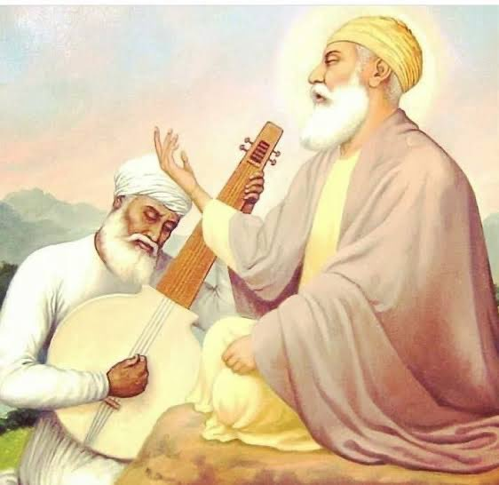

Guru Nanak Dev Ji

Guru Nanak Dev Ji, the first Guru of Sikhs, advocated righteousness, compassion, and
equality. Born in 1469 AD in Rai Bhoe Ki Talwandi (now Sri Nankana Sahib, Pakistan),
Guru Ji emphasized three fundamental Sikh values: Naam Japna (recitation of God’s Name),
Kirat Karni (earning an honest living), and Vand ke Chakna (sharing with others).
Guru Nanak Dev Ji challenged societal norms, questioning the purpose of rituals like the
sacred thread ceremony and promoting equality among all. Rejecting caste-based discrimination,
Guru Ji traveled extensively, spreading the message of truth. Through encounters with
figures like Malik Bhago, Guru Nanak Dev Ji exemplified the importance of honest living
and sharing. Guru Ji's teachings laid the foundation for Sikh values, including the
concept of Langar (community kitchen). Guru Nanak Dev Ji's legacy extends beyond his
lifetime, influencing subsequent Sikh Gurus and enshrined in Sri Guru Granth Sahib Ji.